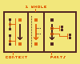

A
Conveying complex multilayered design space is not easy, but is necessary in certain contexts, i.e. Some projects contain complex multilayered design space.
B
Separate a complex design into independent parts. Create an organizing logic which allows for relatedness without clutter.
A
Conveying complex multilayered design space is not easy, but is necessary in certain contexts, i.e. Some projects contain complex multilayered design space.

Display the same data in many different ways. I will call each a "view". The goal of the collection of all views is to understand the central "whole" in question, not to lead the viewer in circles.
Each "view" has a different purpose to this end.
The left view ("context") presents the start & end (or introduction & conclusion, or problem & solution) and focuses on back-links giving greater context to why this whole has a purpose. Why was it created? Why might you be here in the first place, now?
The central view ("1 whole") has a linear flow connecting the start to the end. How does the start connect to the end? How is this the solution to the problem? How does the conclusion resolve the introduction? And, what is introduction?
The right view ("parts") links to supplementary wholes, especially those given purpose from the perspective of the present one. A major purpose of this view is to give the present whole its identity, encapsulating detail into their own parts when possible.
context-problem-solution framing taken from The Timeless Way of Building (1979) (Alexander, Christopher)
The purpose of connectedness is to benefit those things that have been connected. Do not create incidental connections. Remember the uselessness of lines in the complete graph.
(?) TODO: Perhaps explore a way to create ephemeral connections, ghosts or hints of connections unrealized...
(?) TODO: Perhaps an automatic tool or reminder about some maximum number of connections, suggesting that some connections might be less important, lower quality, or that the topic might be too large. PROPOSE SOLUTIONS: Remove unimportant connections, find a higher quality or denser connection that can replace multiple smaller connections, break up the current topic into parts.
(!) This solution is a work in progress.
B
Separate a complex design into independent parts. Create an organizing logic which allows for relatedness without clutter.